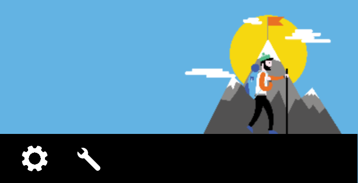

Android développer - Navigation vocale
Vocaliser les images #
Cible : tout le monde et en particulier les personnes ayant des déficiences visuelles.
Quand : dès la conception, à la rédaction du contenu et pendant le développement.
Description :
Il est important que les images possèdent une alternative textuelle, qui donne toutes les informations portées par l’image, pour les personnes qui utilisent la navigation vocale.
Dans le cas d’une image contenant du texte, l’alternative sera ledit texte. Dans le cas d’une image qui apporte des informations sous la forme d’un graphe, dessin ou autre, l’alternative devra contenir toutes les informations nécessaires présentes dans l’image.
Les images décoratives en revanche ne nécessitent pas d'alternative textuelle et ne doivent donc pas être vocalisées.
À vérifier :
- Les images portant de l’information restituent cette information à travers leurs alternatives textuelles
Exemple simple (internationalisé) :
<TextView
…
android:id="@+id/myTextviewId"
android:contentDescription="@string/criteria_alt_ex1_cd_txt2"
/>
myTextView = (TextView) findViewById(R.id.myTextviewId);
myTextView.setContentDescription(getString(R.string.criteria_alt_ex1_cd_txt2));
myTextViewId.contentDescription = getString(R.string.criteria_alt_ex1_cd_txt2)
// Avec Jetpack Compose
Image(
painterResource(id = R.drawable.ic_launcher_foreground),
contentDescription = "Content description for visually impaired"
)
Référence WCAG :
Vocaliser tous les éléments signifiants #
Cible : tout le monde et en particulier les personnes déficientes visuelles.
Quand : dès la conception, à la rédaction du contenu et pendant le développement.
Description :
Lorsqu'un utilisateur navigue à l'aide de la navigation vocale (Talkback par exemple), chaque élément signifiant de l'écran doit lui être restitué vocalement, afin qu'il puisse utiliser l'application sans aucune perte d'information.
Les alternatives textuelles sont au cœur de l’accessibilité sur mobile. Tandis qu'un texte sera restitué nativement par le lecteur d'écran, certains éléments nécessitent une alternative textuelle pour pouvoir vocaliser l'information correctement.
Il est important de renseigner une alternative textuelle lorsque l’information n’est pas disponible ou suffisante nativement. C’est le cas des composants fournissant de l’information par la couleur, la forme, la position, le son… Sur mobile, tous les composants peuvent recevoir une alternative textuelle, il est donc possible d’enrichir la vocalisation native d’un élément, y compris celle d’un simple texte.
Certaines images sont régulièrement associées à du texte pour donner une information. C’est le cas notamment des « messages non lus » où une infobulle donne le nombre de messages à lire et où une image donne l’information « message ». Dans ce cas, la solution consiste à placer une alternative textuelle sur le texte qui donne toutes les informations nécessaires. Par exemple : « 3 messages non lus ». On peut également placer cette alternative sur l’image, mais dans ce cas, il faut penser à rendre le texte « invisible » pour le lecteur d’écran.
À vérifier :
- Les éléments de l’application sont tous vocalisés et accessibles
- Les vocalisations de l’application sont explicites et compréhensibles pour chacun des éléments.
- Les éléments interactifs sont vocalisés avec l'action associée
- Les titres des activités sont vocalisés
- Les items d'une liste sont vocalisés indépendamment les uns des autres
Exemple :
Ci-dessous, un exemple fréquent d’une icône qu’on couple avec du texte (infobulle) pour ajouter de l’information. Dans notre cas, l’icône « mail » couplée à l’infobulle de valeur « 3 » nous fait comprendre que nous avons « 3 mails non lus ». Si aucune alternative textuelle n’est ajoutée, 2 vocalisations seront lues « bouton sans libellé » et « 3 ». On comprend bien ici l’importance d’ajouter des alternatives textuelles.

containerView.setContentDescription("3 mails non lus, bouton"); //On ajoute l’alternative complète (construite dynamiquement au préalable) sur le conteneur
containerView.setImportantForAccessibility(View.IMPORTANT_FOR_ACCESSIBILITY_YES); //Le conteneur est une View, non visible par l’API d’accessibilité par défaut. On le rend visible.
mailImageView.setImportantForAccessibility(View.IMPORTANT_FOR_ACCESSIBILITY_NO); //On masque le bouton-icône pour éviter une redondance d’information
infobulleTextView.setImportantForAccessibility(View.IMPORTANT_FOR_ACCESSIBILITY_NO); //On masque le texte pour éviter une redondance d’information
containerView.contentDescription = "3 mails non lus, bouton" //On ajoute l’alternative complète (construite dynamiquement au préalable) sur le conteneur
containerView.importantForAccessibility = View.IMPORTANT_FOR_ACCESSIBILITY_YES //Le conteneur est une View, non visible par l’API d’accessibilité par défaut. On le rend visible.
mailImageView.importantForAccessibility = View.IMPORTANT_FOR_ACCESSIBILITY_NO //On masque le bouton-icône pour éviter une redondance d’information
infobulleTextView.importantForAccessibility = View.IMPORTANT_FOR_ACCESSIBILITY_NO) //On masque le texte pour éviter une redondance d’information
// Avec Jetpack Compose
Box(modifier = Modifier.semantics(mergeDescendants = true) {}) {
Image(
painterResource(id = R.drawable.ic_launcher_foreground),
contentDescription = null,
modifier = Modifier.padding(8.dp)
)
Box (modifier = Modifier.align(Alignment.TopEnd)
.background(color = Color.Red, shape = CircleShape)
.size(20.dp)) {
Text(
text = "3",
fontSize = 14.sp,
color = Color.White,
modifier = Modifier
.align(Alignment.Center)
.semantics {
this.contentDescription = "3 mails non lus"
}
)
}
}
Référence WCAG :
Rédiger de bonnes alternatives textuelles #
Description :
Il est essentiel d'écrire de bonnes alternatives textuelles afin de faciliter la compréhension des utilisateurs de lecteurs d'écrans. La rédaction d'une bonne alternative dépend de ce qu'on souhaite décrire.
- Icônes : les icônes sont utilisées fréquemment pour représenter un bouton ou pour afficher un état. Dans le cas d'un bouton, il est préférable d'utiliser un verbe pour rédiger l'alternative textuelle. Par exemple, un bouton Favori représenté par un coeur pourrait être décrit par "Ajouter le film au favori" plutôt que par "Coeur" ou "Favori". Dans le cas d'une icône représentant un état, il faut cette fois décrire l'état qui est représenté. Par exemple, si on a une icône représentant un micro barré d'une croix, l'alternative textuelle pourrait être "Mutée".
- Textes : les textes sont en général très bien gérés nativement par Android, le texte affiché sera celui qui sera vocalisé, il n'est donc pas nécessaire d'ajouter d'alternative textuelle. En revanche, il faut parfois faire attention, si on utilise des symboles ou des abréviations. Par exemple, pour le texte "02/05/92", on doit ajouter une alternative textuelle pour vocaliser "2 mai 1992" (il est aussi possible dans ce cas précis d'utiliser un
TtsSpan). - Images : le cas des images qui est plus complexe est détaillé dans ce chapitre
Vocaliser l'état des éléments #
Cible : tout le monde et en particulier les personnes déficientes visuelles.
Quand : lors du développement.
Description :
Si un élément ne restitue pas à la vocalisation son statut, sa nature ou son état, l’utilisateur de TalkBack est dans l’impossibilité de comprendre ce qui se passe à l’écran. Ne pas préciser qu’une zone est dépliée ou que l’on se trouve face à un système d’onglets sont des exemples très fréquents.
Les différents types d’onglets proposés dans Android, par exemple, ne donnent pas toutes les informations sur leur nature et sur leur état. Il est donc à la charge du développeur de donner ces informations à l’utilisateur via les attributs d’accessibilité correspondants (contentDescription). En l’occurrence, une bonne alternative pour le titre d’un onglet peut être : "sélectionné, titre de l’onglet, onglet 1 sur 3"
Autre classique d’élément qui ne restitue pas par défaut son état : les zones dépliables. Encore une fois, c’est grâce à l’alternative textuelle du titre de la zone dépliable que l’on peut donner à l’utilisateur de TalkBack le statut de celle-ci.
Pour renseigner ce genre d’information, il faut utiliser l’attribut contentDescription (disponible pour tout élément héritant de View).
À vérifier :
- Tout élément dont le statut peut être modifié durant l’utilisation de l’application doit restituer son état à travers son alternative textuelle. Par exemple, un élément qui peut être sélectionné/non sélectionné.
Exemple des onglets tabulés :
L’exemple présente des onglets tabulés au-dessus et en-dessous d’un ViewPager dans un cas en TabLayout et dans l’autre en BottomNavigationView. Les onglets ne se pratiquent plus sous forme de TabHost.
Il faut indiquer l’état et la nature des onglets (non internationalisé) :
//Dans le layout de l’activité
<android.support.constraint.ConstraintLayout
…>
<android.support.v4.view.ViewPager
android:id="@+id/viewpager"
…
>
<android.support.design.widget.TabLayout
android:id="@+id/tabtoolbar_pager"
…
</android.support.v4.view.ViewPager>
<android.support.design.widget.BottomNavigationView
android:id="@+id/navigation"
[…]
app:menu="@menu/navigation" />
</android.support.constraint.ConstraintLayout>
//Dans le fichier strings.xml
<string name="cd_tab_title_param">%1$s, onglet %2$s sur %3$s</string>
@Override
protected void onCreate(Bundle savedInstanceState) {
super.onCreate(savedInstanceState);
setContentView(R.layout.activity_main);
mTabLayout = (TabLayout) findViewById(R.id.tabtoolbar_pager);
mViewPager = (ViewPager) findViewById(R.id.viewpager);
mTabLayout.addOnLayoutChangeListener(mTabLayoutListener);
mTabLayout.setupWithViewPager(mViewPager);
mAdapter = new ScreenSlidePagerAdapter(getSupportFragmentManager());
mViewPager.setAdapter(mAdapter);
//initialise le contentDescription à la création
updateTabContentDescription(0);
mViewPager.addOnPageChangeListener(new ViewPager.OnPageChangeListener() {
[…]
public void onPageSelected(int position) {
updateTabContentDescription(position);
}
});
//Le BottomNavigationView n’est pas forcément au bas de la vue, il est à positionner dans le layout.
BottomNavigationView navigation = (BottomNavigationView) findViewById(R.id.navigation);
navigation.setOnNavigationItemSelectedListener(mOnNavigationItemSelectedListener);
[…]
}
private void updateTabContentDescription(int position) {
for (int i = 0; i < mAdapter.getCount(); i++) {
TabLayout.Tab tab = mTabLayout.getTabAt(i);
String cd_param_string = getString(R.string.cd_tab_title_param,
mAdapter.getPageTitle(i), // titre en paramètre 1 voir le xml
i + 1, // le numéro de l’onglet actuel, paramètre 2
mAdapter.getCount()); // le nombre d’onglets automatique, paramètre 3
if (tab != null) {
tab.setContentDescription(cd_param_string);
}
//Pour Tablayout and BottomNavigationView l’information “sélectionné” est déjà vocalisée.
//Soit, par exemple : « sélectionné, `titre onglet 1`, onglet 1 sur 5 »
//ou encore « `titre onglet 3`, onglet 3 sur 5. » Puis « appuyer deux fois pour activer ».
// Paramètrer la borne supérieure automatiquement permet de ne pas se retrouver avec une vocalisation du type :
//« sélectionné, `titre onglet 4`, onglet 4 sur 3. », où la borne supérieure est incohérente.
// Pour le `TabHost` il faudrait en plus préciser l’information « sélectionné ».
}
}
private fun updateTabContentDescription(position: Int) {
for (i in 0 until mAdapter!!.count) {
val tab = mTabLayout!!.getTabAt(i)
val cd_param_string = getString(R.string.cd_tab_title_param,
mAdapter!!.getPageTitle(i), // titre en paramètre 1 voir le xml
i + 1, // le numéro de l’onglet actuel, paramètre 2
mAdapter!!.count) // le nombre d’onglets automatique, paramètre 3
if (tab != null) {
tab.contentDescription = cd_param_string
//Pour Tablayout and BottomNavigationView l’information “sélectionné” est déjà vocalisée.
//Soit, par exemple : « sélectionné, `titre onglet 1`, onglet 1 sur 5 »
//ou encore « `titre onglet 3`, onglet 3 sur 5. » Puis « appuyer deux fois pour activer ».
// Paramètrer la borne supérieure automatiquement permet de ne pas se retrouver avec une vocalisation du type :
// « sélectionné, `titre onglet 5`, onglet 4 sur 3. », où la borne supérieure est incohérente.
// Pour le `TabHost` il faudrait en plus préciser l’information « sélectionné ».
}
}
}
Exemple d'états d'un élément avec Jetpack Compose :
// Avec Jetpack Compose
val stateSubscribed = stringResource(R.string.subscribed)
val stateNotSubscribed = stringResource(R.string.not_subscribed)
Row(
modifier = Modifier.semantics {
stateDescription = if (selected) stateSubscribed else stateNotSubscribed
}
....
)
Référence WCAG :
Gérer l'ordre de lecture avec la navigation vocale #
Cible : tout le monde et en particulier les personnes déficientes visuelles.
Quand : dès la conception, à la rédaction du contenu et pendant le développement.
Description :
L’ordre du focus du lecteur d’écran par défaut prend en compte plusieurs paramètres : la lecture « logique », en français, de gauche à droite et de haut en bas, et la lecture du xml (ordre de déclaration des éléments). Il est tout à fait possible de redéfinir cet ordre de lecture avec deux outils :
accessibilityTraversalAfter: prend un id en paramètre et permet de spécifier à la vue qu’elle doit être décrite par l’accessibilité après la vue passée en paramètre.accessibilityTraversalBefore: prend un id en paramètre et permet de spécifier à la vue qu’elle doit être décrite par l’accessibilité avant la vue passée en paramètre.
À noter : ces attributs peuvent être utilisés directement dans le xml mais également dans le code via les méthodes setAccessibilityTraversalAfter et setAccessibilityTraversalBefore. Ces méthodes sont disponibles pour tout élément qui hérite de View.
À vérifier :
- L'ordre de la vocalisation suit un ordre compréhensible et logique
Exemple :
Dans cet exemple, l’ordre de lecture par défaut dépend complètement de l’implémentation et de l’ordre de déclaration des éléments. Dans ce cas-ci : vol+, vol-, 1, 2, 3, 4, 5, 6, 7, 8, 9, p+, p-, 0. Un ordre de lecture plus cohérent serait 1, 2, 3, 4, 5, 6, 7, 8, 9, 0, vol+, vol-, p+, p-.

volupButton.setAccessibilityTraversalAfter(myView.findViewById(R.id.remote0).getId());
voldownButton.setAccessibilityTraversalAfter(myView.findViewById(R.id.volup).getId());
chaineplusButton.setAccessibilityTraversalAfter(myView.findViewById(R.id.voldown).getId());
chainemoinsButton.setAccessibilityTraversalAfter(myView.findViewById(R.id.chaineplus).getId());
volupButton.accessibilityTraversalAfter = remote0.id
voldownButton.accessibilityTraversalAfter = volup.id
chaineplusButton.accessibilityTraversalAfter = voldown.id
chainemoinsButton.accessibilityTraversalAfter = chaineplus.id
Référence WCAG :
Vocaliser le changement de contenu #
Cible : tout le monde et en particulier les personnes déficientes visuelles.
Quand : dès la conception, à la rédaction du contenu et pendant le développement.
Description :
Lorsque du contenu est modifié dynamiquement à la suite d’une action de l’utilisateur, il faut le notifier à la synthèse vocale. Autrement, un utilisateur non voyant ne peut pas savoir qu’une action a été déclenchée.
Une simple vocalisation peut suffire à avertir l’utilisateur. Il est très facile de déclencher des vocalisations avec TalkBack. Attention : nous parlons de la vocalisation si TalkBack est activé et non pas de TTS (Text To Speech) qui peut fonctionner indépendamment du statut de TalkBack. Il suffit de faire appel à la méthode announceForAccessibility en lui passant en paramètre l’id de la chaîne de caractère à vocaliser. À noter : la méthode announceForAccessibility est disponible sur tout élément qui hérite de View et se fait dans la langue du système.
Il est également possible de spécifier à une vue qu’elle est une région live, c’est-à-dire que son contenu est susceptible d’être modifié dynamiquement et qu’elle doit dans ce cas prévenir l’API d’accessibilité. Cela aura pour conséquence de générer des vocalisations avec TalkBack par exemple. Un exemple type d’utilisation : sur un formulaire, si l’utilisateur fait une erreur et qu’un message d’erreur apparaît, la vue contenant le message doit être définie comme une région live. Il faut passer par la méthode setAccessibilityLiveRegion qui prend en paramètre un mode pour la région live. Il existe 3 modes :
ACCESSIBILITY_LIVE_REGION_NONE: cette vue n’est pas une région live. C’est la valeur par défaut de la plupart des vues.ACCESSIBILITY_LIVE_REGION_POLITE: en cas de changement dans la vue, des vocalisations sont effectuées sur les changements. Ces vocalisations sont « polies » ; elles sont moins prioritaires que les vocalisations système par exemple.ACCESSIBILITY_LIVE_REGION_ASSERTIVE: en cas de changement dans la vue, des vocalisations seront effectuées sur les changements. Ces vocalisations sont « rude » ; elles sont prioritaires et immédiatement vocalisées. À noter, la méthodesetAccessibilityLiveRegionest disponible sur tout élément qui hérite deView.
À vérifier :
- Les messages temporaires affichés à l'écran (tels que les Toast) sont vocalisés
- L'ouverture des dialogs sont vocalisés
- Les transitions entre les activités sont vocalisées (par le titre de la nouvelle activité par exemple)
- Les messages d'erreurs sont vocalisés
- Les scrolls horizontaux sont vocalisés
- Le changement d'une partie de l'écran (par exemple le changement un fragment) est vocalisé
- Le changement d'un élément de l'écran est vocalisé si il est utile pour l'utilisateur d'en être informé
Exemple de déclenchement d'une vocalisation:
Il est fréquent de tester la version d’Android avant de déclencher une vocalisation TalkBack. En effet, announceForAccessibility ne fonctionne que depuis l’arrivée d’Android Jelly Bean.
if (Build.VERSION.SDK_INT >= Build.VERSION_CODES.JELLY_BEAN) {
myView.announceForAccessibility(getString(R.string.criteria_contentchange_ex1_announce));
}
if (Build.VERSION.SDK_INT >= Build.VERSION_CODES.JELLY_BEAN) {
myView.announceForAccessibility(getString(R.string.criteria_contentchange_ex1_announce))
}
Exemple de région live:
<TextView
[…]
android:accessibilityLiveRegion="polite" />
Exemple de région live avec Jetpack Compose:
@Composable
fun PoliteAccessibilityRegion() {
Column {
Text(
text = "Contenu mis à jour pour l'accessibilité",
modifier = Modifier.accessibilityLiveRegion(AccessibilityLiveRegion.Polite)
)
}
}
Ne pas vocaliser les éléments décoratifs et cachés #
Cible : tout le monde et en particulier les personnes déficientes visuelles.
Quand : dès la conception, à la rédaction du contenu et pendant le développement.
Description :
Afin de ne pas polluer et de ne pas rendre confus la navigation avec un lecteur d'écran, il est nécessaire de ne vocaliser que les éléments signifiants. Les éléments décoratifs, tels que les illustrations ne doivent donc pas être vocalisés.
De plus, bien qu’invisibles à l’écran, certains éléments peuvent être lus par le lecteur d’écran (éléments positionnés en dehors de la zone visible ou masqués par d’autres éléments). La superposition d’écrans est quelque chose de courant sur mobile, mais cela engendre des problèmes d’accessibilité très lourds à corriger si elle n’est pas faite correctement dès le départ. Un lecteur d’écran tel que TalkBack est capable de lire les informations d’une vue qui est placée « sous » une autre. Mais si l’utilisateur n’est plus capable d’interagir avec cette vue, cela perturbe totalement sa navigation et celle-ci devient vite impossible.
Grand classique du problème : les fragments. Un fragment est un composant qu’on peut facilement superposer par-dessus un autre sous Android. Une mauvaise utilisation des fragments peut aboutir à une navigation impossible avec le lecteur d’écran.
Consulter l’article sur l’utilisation des fragments pour plus d’informations.
À vérifier :
- Aucun élément fantôme n'est vocalisé
- Les éléments décoratifs sont ignorés et ne sont pas vocalisés
Exemples :
En décomposant l’image :
- pas de
contentDescription 
imageView.setContentDescription("paramètres")
imageView.setContentDescription("éditer le nom de l’image")
<ImageView
android:id="@+id/montagnard"
android:src="@drawable/montagnard"
android:contentDescription="@null"
... />
<ImageButton
android:id="@+id/settings"
android:src="@drawable/settings"
android:contentDescription="@string/settings"
... />
<ImageButton
android:id="@+id/edit"
android:src="@drawable/edit"
android:contentDescription="@string/edit"
... />
// Avec Jetpack Compose
Image(
painterResource(id = R.drawable.montagnard),
contentDescription = "null"
)
Image(
painterResource(id = R.drawable.setting),
contentDescription = stringResource(R.string.settings)
)
Image(
painterResource(id = R.drawable.edit),
contentDescription = stringResource(R.string.edit)
)
Référence WCAG :
Regrouper les éléments #
Cible : tout le monde et en particulier les personnes déficientes visuelles.
Quand : dès la conception, à la rédaction du contenu et pendant le développement.
Description :
Il est recommandé de regrouper les éléments pour la vocalisation vocale lorsque cela permet de gagner en efficacité et en compréhension.
Par exemple, dans le cadre d'une application de musique, il est plus intéressant regrouper la vocalisation du nom de la musique, du nom de l'artiste et de la durée de celle-ci en un seul bloc, plutôt que de les vocaliser séparément et d'alourdir la navigation.
Il faut veiller à trouver la bonne balance entre la navigation et la vocalisation. Vocaliser trop d'informations dans un seul bloc va nuire à l'écoute, l'utilisateur devant patienter avant d'entendre l'info qu'il recherche. Tandis qu'avoir aucun élément regroupé va augmenter la quantité d'éléments naviguable et donc alourdir la navigation. C'est d'autant plus le cas lorsqu'on a des informations multidimensionnelles.
À vérifier :
- Les éléments reliés sont groupés au sein d'un même block d'annonce pour la vocalisation
- Les informations multidimensionnelles respectent une bonne balance entre nombre de blocs et nombre de contenu dans chaque bloc
Exemple d'une vocalisation groupée :
<ConstraintLayout
android:id="@+id/song_data_container" ...
android:screenReaderFocusable="true">
<TextView
android:id="@+id/song_title" ...
android:focusable="false"
android:text="@string/my_song_title" />
<TextView
android:id="@+id/song_artist"
android:focusable="false"
android:text="@string/my_songwriter" />
</ConstraintLayout>
// Avec Jetpack Compose
Row(
verticalAlignment = Alignment.CenterVertically,
modifier = Modifier.semantics(mergeDescendants = true) {}
) {
Text(
text = stringResource(R.string.my_song_title),
fontSize = 14.sp,
)
Text(
text = stringResource(R.string.my_songwriter),
fontSize = 14.sp,
)
}
Référence WCAG :
Gérer la navigation par entêtes #
Cible : tout le monde et en particulier les personnes déficientes visuelles.
Quand : dès la conception, à la rédaction du contenu et pendant le développement.
Description :
Au sein d'un même écran, il arrive parfois que le contenu affiché présente différentes sections, avec pour chacune d'entre elles une entête. Il est possible avec le lecteur d'écran Talkback de naviguer par entêtes, plutôt que de naviguer par éléments. Il est donc bien plus rapide pour un utilisateur de naviguer entre les différentes sections.
Pour que Talkback puisse reconnaitre les entêtes, il faut ajouter un attribut dans le layout XML aux différents éléments considérés comme tel : accessibilityHeading
À vérifier :
- Les entêtes sont navigables avec le paramètre "Heading" de navigation Talkback
Exemple :
<TextView
[…]
android:id="@+id/myTextLevel1viewId"
android:accessibilityHeading="true"
/>
// Avec Jetpack Compose
Text(
text = stringResource(R.string.myTextLevel1viewId),
fontSize = 14.sp,
modifier = Modifier.semantics { heading()}
)
Référence WCAG :
Masquer des éléments à l’accessibilité #
Cible : tout le monde et en particulier les personnes ayant des déficiences visuelles et/ou motrices.
Quand : dès la phase de conception et lors du développement.
Description :
Il est possible via un attribut d’accessibilité de masquer des éléments aux outils d’accessibilité (TalkBack par exemple). Par extension, il est possible de forcer certains éléments à être visibles aux outils d’accessibilité.
ImportantForAccessibility : suivant la valeur de l’attribut, cela permet d’indiquer qu’un élément est visible ou non de l’API d’accessibilité.
auto(0) : valeur par défaut, c’est le système qui décide. Par exemple, unButtonaura sa valeur par défaut à 1 (yes) et unLinearLayoutà 2 (no).yes(1) : la vue est importante pour l’accessibilité. Elle peut par exemple recevoir le focus de TalkBack.no(2) : la vue n’est pas importante pour l’accessibilité. Elle ne déclenche plus d’événement d’accessibilité et est par conséquent ignorée par des services tel que TalkBack.noHideDescendants(4) : la vue n’est pas importante pour l’accessibilité, mais également toutes ses vues filles. Cela permet de cacher tous les éléments d’une vue à l’accessibilité en une seule fois. Très utile sur les éléments custom.
À noter : l’attribut « importantForAccessibility » est disponible pour tout élément qui hérite de View.
Exemples :
<TextView
[…]
android:id="@+id/myTextviewId1"
android:importantForAccessibility="4"
/>
<TextView
[…]
android:id="@+id/myTextviewId2"
android:importantForAccessibility="noHideDescendants"
/>
myTextView1 = (TextView) findViewById(R.id.myTextviewId1);
myTextView2 = (TextView) findViewById(R.id.myTextviewId2);
myTextView1.setImportantForAccessibility(4); // JELLY_BEAN
myTextView2.setImportantForAccessibility(View.IMPORTANT_FOR_ACCESSIBILITY_NO_HIDE_DESCENDANTS); // KITKAT
myTextView1.importantForAccessibility = 4 // JELLY_BEAN
myTextView2.importantForAccessibility = View.IMPORTANT_FOR_ACCESSIBILITY_NO_HIDE_DESCENDANTS // KITKAT
Détecter si TalkBack est activé #
Description :
Sous Android, il est possible de savoir si l’API d’accessibilité est activée, et par extension de savoir si TalkBack est activé.
Exemple :
AccessibilityManager am = (AccessibilityManager) context.getSystemService(ACCESSIBILITY_SERVICE);
boolean isAccessibilityEnabled = am.isEnabled();
val am = context.getSystemService(Context.ACCESSIBILITY_SERVICE) as AccessibilityManager
val isAccessibilityEnabled = am.isEnabled